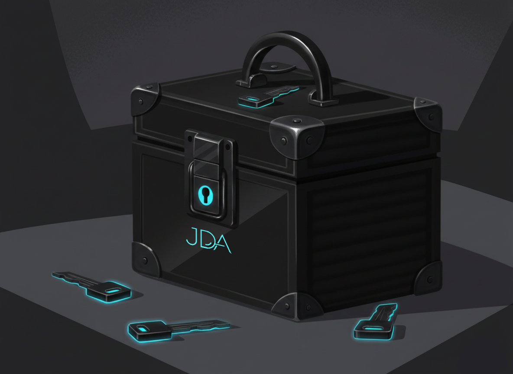

Η διασφάλιση της πρόσβασης στον λογαριασμό σας είναι κρίσιμη για την προστασία των δεδομένων σας. Το Evox χρησιμοποιεί προηγμένα πρωτόκολλα κρυπτογράφησης για να διασφαλίσει ότι μόνο εσείς έχετε πρόσβαση στις υπηρεσίες σας.

Διαχείριση και Αλλαγή Κωδικού
Συνιστάται η αλλαγή του κωδικού πρόσβασης κάθε 6 μήνες για μέγιστη προστασία. Ο νέος σας κωδικός θα πρέπει να περιέχει τουλάχιστον 10 χαρακτήρες, σύμβολα και αριθμούς.
- Συνδεθείτε στον λογαριασμό σας και μεταβείτε στο Προφίλ σας.
- Εντοπίστε την ενότητα Ρυθμίσεις.
- Επιλέξτε το πεδίο "Αλλαγή PIN".
- Εισάγετε το τρέχον PIN σας και στη συνέχεια το νέο επιθυμητό PIN δύο φορές για επιβεβαίωση.
Ανάκτηση Πρόσβασης
Εάν έχετε ξεχάσει τον κωδικό σας ή ο λογαριασμός σας έχει κλειδωθεί για λόγους ασφαλείας:
- Χρησιμοποιήστε τη λειτουργία "Ξέχασα το PIN μου" στην αρχική σελίδα σύνδεσης.
- Επιλέξτε μέθοδο επαλήθευσης μέσω Email ή Instagram, ανάλογα με τα στοιχεία που δηλώσατε κατά την εγγραφή σας.
- Σε περίπτωση που δεν έχετε πρόσβαση στο email σας, επικοινωνήστε άμεσα με τους διαχειριστές ή την ομάδα υποστήριξης του Evox.